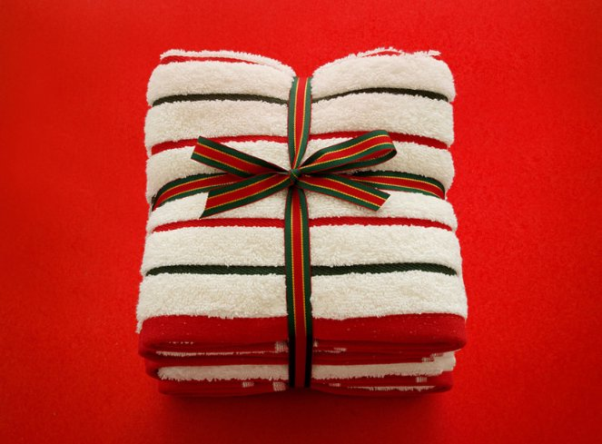
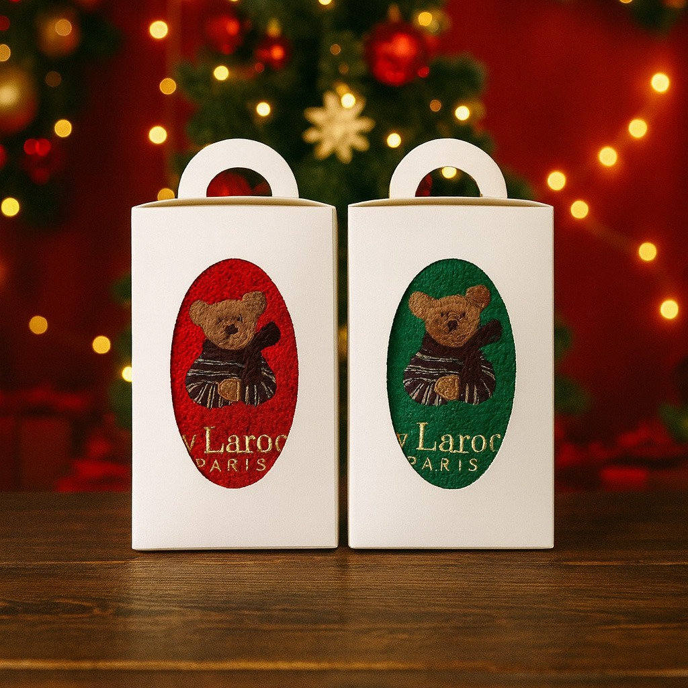

2026 크리스마스 수건 선물세트 추천 BEST 3｜어린이집·교회·기업 연말 답례품 완벽 가이드
- 소량·가정용·지인 선물: 레드&그린 포인트와 도톰한 코마사 원단이 돋보이는 클라우망 크리스마스 스트라이프 코마사 호텔수건이 만족도 1위입니다.
- 어린이집·유치원·교회 성탄절 선물: 손잡이 투명창 선물박스가 기본 포함된 기라로쉬 베어 자수 세면타월 선물세트가 포장 번거로움 없이 즉시 배부하기에 최적입니다.
- 기업·관공서·교회 대량 특판(50장 이상): 세종 조치원 본사 직영 컴퓨터 자수 설비를 보유한 송월·무한·충무타올 공식 총판 (주)수건메이커(1599-1838)에서 1:1 무료 시안과 총판 특판가로 제작하세요.


1. 왜 연말·크리스마스 선물로 '프리미엄 수건'이 가장 인기 있을까요?
매년 11월과 12월이 되면 어린이집·유치원 학부모님들부터 교회 성탄절 행사 담당자, 기업 총무팀까지 가장 많이 고민하시는 것이 바로 "부담 없으면서도 받는 분이 실제로 매일 쓸 수 있는 실용적인 선물"입니다.
과거의 얇고 뻣뻣한 판촉용 수건과 달리, 최근에는 30수·40수 최고급 코마사(Combed Yarn)나 친환경 뱀부(대나무) 원사에 크리스마스 시즌 컬러(레드·그린·화이트)와 감성적인 자수 디자인을 더한 호텔식 타월이 출시되면서 호불호 없는 연말 선물 1순위로 자리 잡았습니다.
2. 한눈에 비교하는 2026 크리스마스 수건 추천 BEST 3
| 추천 모델 | 원사 및 특징 | 추천 대상 / 용도 | 포장 및 구매처 |
|---|---|---|---|
| ① 클라우망 크리스마스 스트라이프 호텔수건 | 고급 코마사 100%, 레드&그린 스트라이프 포인트, 먼지 적은 도톰한 볼륨감 | 연말 홈파티, 집들이, 가족·지인 크리스마스 선물 | 스마트스토어 바로가기 ↗ |
| ② 기라로쉬 베어 자수 세면타월 선물세트 | 프랑스 명품 기라로쉬 정품 테디베어 자수, 레드/그린 시즌 컬러 | 어린이집·유치원 성탄 선물, 교회 소그룹, 센스 있는 답례품 | 쿠팡 상품 바로가기 ↗ |
| ③ 송월·무한·충무타올 단체 자수 특판 세트 | 국내 3대 브랜드 정품, 170g~200g 호텔식 원단, 로고·문구 컴퓨터 자수 | 기업 송년회, 교회 전교인 성탄절 기념품, 관공서·병원 연말 특판 | 총판 직영 견적문의 ↗ |
클라우망 크리스마스 수건 스트라이프 코마사 호텔수건
욕실에 걸어두기만 해도 크리스마스 분위기가 물씬 살아나는 레드 & 그린 스트라이프 호텔수건입니다. 원사를 빗질하여 짧은 잔털과 불순물을 제거한 고급 코마사 면을 사용하여 세탁 후에도 먼지가 적고 포근한 흡수력을 유지합니다.
네이버 스마트스토어에서 자세히 보기기라로쉬 베어 자수 세면타월 선물세트 (손잡이 선물박스 포함)
목도리를 두른 귀여운 곰돌이 자수와 Guy Laroche PARIS 금사 로고가 어우러진 프리미엄 세면타월입니다. 타원형 투명창이 뚫린 손잡이형 화이트 기프트 박스에 담겨 있어 별도의 쇼핑백이나 재포장 없이 곧바로 선물할 수 있습니다.
쿠팡에서 선물세트 바로 구매하기송월·무한·충무타올 공식 총판 직영 컴퓨터 자수 답례품
교회 성탄절 전교인 선물, 기업 송년회 기념품, 병원·관공서 연말 행사처럼 단체 문구나 로고를 새겨야 한다면 세종특별자치시 조치원읍 본사에 자체 컴퓨터 자수 설비를 보유한 (주)수건메이커에 맡겨주세요. 중간 유통 마진 없는 총판 직영 단가와 무료 디자인 시안, 세금계산서 완벽 발행을 지원합니다.
자주 묻는 질문 (FAQ)
Q. 크리스마스 수건 답례품은 최소 몇 장부터 주문 가능한가요?
클라우망 크리스마스 스트라이프 수건 및 기라로쉬 베어 선물세트는 네이버 스마트스토어와 쿠팡을 통해 1세트 소량부터 즉시 구매 가능합니다. 이니셜이나 단체 로고 자수를 넣는 맞춤 제작은 소량 답례품부터 대량 기업 특판까지 수량별 우대 단가로 상담해 드립니다.
Q. 단체 자수 주문 시 제작 기간은 얼마나 걸리나요?
(주)수건메이커는 외주 하청을 주지 않고 세종시 조치원 본사에서 최첨단 컴퓨터 다두 자수기를 직접 가동합니다. 시안 확정 후 평균 2~4영업일 이내에 정밀 자수 제작 및 선물 포장을 마쳐 전국 택배로 안전하게 발송해 드립니다. (연말 성수기에는 희망 납기일 1~2주 전 예약을 권장합니다.)